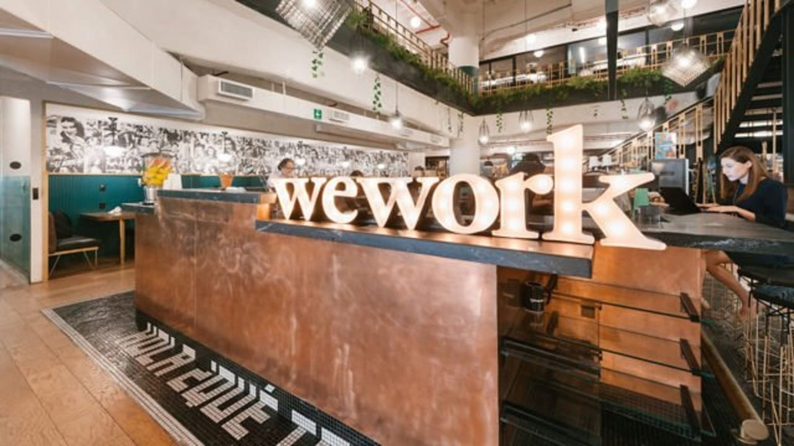
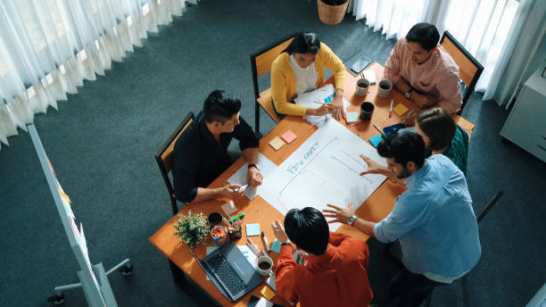

Todos los martes y viernes de 19:00 a 22:00 en We Work, Calle Baker 133, Providencia, Santiago
En esta charla revisaremos las técnicas y tecnologías que hace que sea económico hacer frente a los datos de una escala exterma
